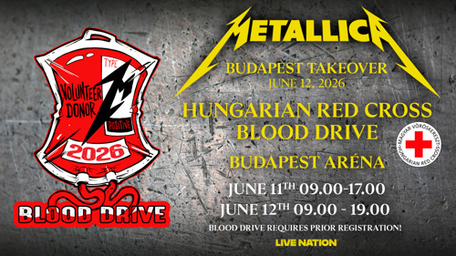
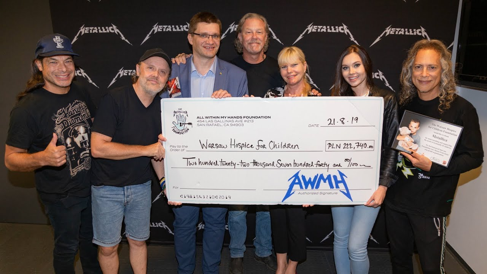

Az All Within My Hands Foundation a Metallica jótékonysági alapítványa, amelyet a zenekar 2017-ben hozott létre. Az alapítvány célja, hogy támogassa azokat a közösségeket, amelyek hosszú éveken át támogatták a zenekart pályafutása során.
A szervezet kiemelt figyelmet fordít az oktatásra, a szakmai képzésekre és a munkaerőpiaci lehetőségek bővítésére. Számos programot támogat az Egyesült Államokban, amelyek segítenek a fiataloknak és a felnőtteknek új készségek elsajátításában és a munkavállalásban.
Az alapítvány emellett rendszeresen nyújt segítséget természeti katasztrófák, járványok és más rendkívüli helyzetek idején. Több alkalommal adományozott jelentős összegeket a rászoruló közösségek megsegítésére és a helyreállítási munkák támogatására.
Az All Within My Hands működését a Metallica különböző jótékonysági eseményekkel támogatja. Ezek közül a legismertebb a Helping Hands Concert & Auction, amelynek bevételeit teljes egészében az alapítvány céljaira fordítják.
Az alapítvány mára a Metallica egyik legfontosabb projektjévé vált. Jól tükrözi a zenekar azon törekvését, hogy a zenei sikereket társadalmi felelősségvállalással és közösségi támogatással is összekapcsolja.


